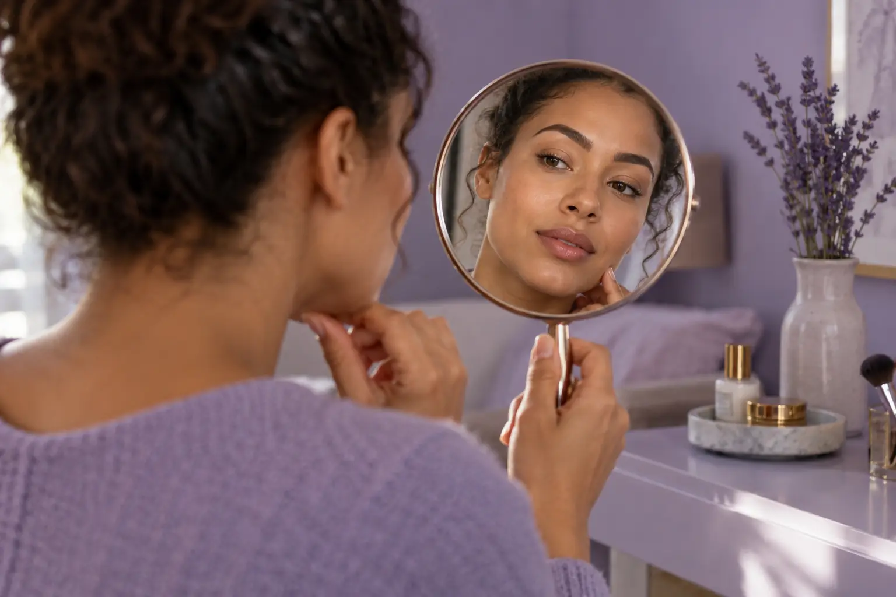

Ilgalaikis antakių makiažas: forma, pigmentas ir metodo pasirinkimas
Autorius: Madbeauty redakcija · Numatyta 2026 m. gruodžio 9 d. 10:00 (Lietuvos laiku)
Kaip pasirinkti permanentinio antakių makiažo užduotį? Palyginkite formą, jau esantį pigmentą ir metodų pavadinimus su tikra paslaugos eiga.

Rinkdamiesi ilgalaikį antakių makiažą pirmiausia įvardykite norimą formą ir įvertinkite, ar odoje jau yra pigmento. Tada palyginkite, ar siekiate atskirų plaukelius primenančių linijų, ar šešėliuoto spalvos fono, ir išsiaiškinkite, kokie darbai įtraukti į konkretų pasiūlymą. Metodo pavadinimas vienas pats neparodo nei visos paslaugos apimties, nei to, kaip rezultatas atrodys būtent jums.
Forma ir jau esantis pigmentas
Prieš lygindami pasiūlymus atskirkite savo tikslą nuo pradinės situacijos. Užsirašykite, ką norėtumėte išlaikyti ar keisti: kontūrą, vizualų tankį, plaukelių krypties įspūdį ar bendrą antakių formą. Jei antakiuose jau yra ilgalaikio makiažo pigmento, naujas darbas, esamo darbo atnaujinimas ir konsultacija dėl ankstesnio pigmento gali būti skirtingos užduotys.
Tai matyti ir paslaugų meniu pavyzdyje: „Treatwell“ kategorijoje konsultacija, naujas darbas ir atnaujinimas įvardyti atskirai. Šie kategorijos įrašai parodo skirtingus paslaugų formatus; jis nepatvirtina Madbeauty teikėjų ar bendros rinkos kainos. Peržiūrėti Treatwell kategorijos pavyzdį
Plaukeliais ar šešėliavimas: palyginkite konkretų metodą
Pavadinimai padeda tik tada, kai aišku, ką jais vadina konkretus pasiūlymas. Pavyzdžiui, „PhiAcademy“ savo „PhiBrows Microblading“ aprašo kaip rankiniu būdu kuriamas plaukelius primenančias linijas, o „PowderBrows“ – kaip aparatinį antakių šešėliavimą. Tai dviejų konkrečių sistemų aprašai, o ne visų „plaukeliais“, „hairstroke“ ar „nano“ vadinamų metodų taisyklė.
Vizualiai šioje poroje palyginkite atskirų linijų įspūdį su tolygesnio, šešėliuoto spalvos fono įspūdžiu. Vienas vaizdas nėra savaime geresnis ar tinkamas kiekvienam žmogui: iš metodo pavadinimo negalima nustatyti individualaus tinkamumo. „PhiBrows Microblading“ aprašas · „PowderBrows“ aprašas
Praktinis palyginimas: jei viename meniu įrašyta „plaukeliais“, o kitame – „šešėliavimas“, bet nėra aišku, ar siūlomas naujas darbas, esamo pigmento atnaujinimas, ar konsultacija, pasiūlymų dar negalite palyginti pagal vien pavadinimus. Pirmiausia sugretinkite užduotį, siekiamą vaizdo pobūdį ir konkrečiai įtrauktus darbus. Tai iliustracinė situacija, ne tikro kliento rezultatas.
Spalva ir nuotraukos: ką jos parodo?
Nuotrauką naudokite kaip pokalbio apie pageidaujamą kryptį priemonę, o ne kaip garantuoto rezultato pavyzdį. Prieš lygindami darbus išsiaiškinkite, ar matomas vaizdas yra iškart po procedūros, ar vėliau įvertintas, ir kokiomis apšvietimo bei fotografavimo sąlygomis jis padarytas. Jei šios aplinkybės skiriasi arba nežinomos, vien pagal nuotraukas patikimai palyginti atspalvį ir formą sunku.
FDA nurodo, kad permanentinio makiažo pigmentas įterpiamas į odą; galimos reakcijos, o korekcija ar šalinimas nėra paprastas grįžimas į pradinę būklę. FDA šaltinis aprašo JAV kontekstą, todėl JAV taisyklių nereikėtų pateikti kaip Lietuvos teisės normų. FDA informacija apie tatuiruotes ir permanentinį makiažą
Paslaugos apimtis ir pasirinkimo matrica
Palyginkite pasiūlymus ta pačia tvarka. Jei kurio nors punkto aprašyme trūksta, laikykite jį nepatvirtintu, o ne numanomu.
- Užduotis: nauja forma, esamo darbo atnaujinimas ar konsultacija dėl jau esančio pigmento?
- Vaizdo kryptis: atskiros plaukelius primenančios linijos, šešėliuotas fonas ar kitas konkrečiai paaiškintas variantas?
- Metodo pavadinimas: kokią realią eigą jis reiškia būtent šiame pasiūlyme?
- Apimtis: kokie darbai įtraukti, o kas būtų atskira paslauga?
- Pavyzdžiai: kokiame etape ir kokiomis sąlygomis padarytos rodomos nuotraukos?
- Informacija apie pigmentą ir higieną: ką teikėjas konkrečiai nurodo, o ką reikėtų dar pasitikslinti?
Lietuvos NVSC ilgalaikį makiažą aptaria tarp odą pažeidžiančių procedūrų ir pateikia su paslaugos higiena bei instrumentais susijusią informaciją. Šaltinis padeda įvertinti, kokios informacijos ieškoti paslaugos aprašyme; jis nepatvirtina konkretaus teikėjo, individualaus tinkamumo ar rezultato. NVSC informacija apie tatuiravimo ir ilgalaikio makiažo paslaugas
Galiausiai pasirinkimą susiekite su konkrečiu savo tikslu ir aiškiai aprašyta paslaugos apimtimi, o ne vien skambiu metodo pavadinimu. Jei ieškote paslaugos, pirmiausia pasirinkite procedūrą, tada atskirai miestą. Nacionalinė kategorija savaime nepatvirtina, kad nurodytame mieste yra teikėjas ar laisvas vizitas.
Procedūrų aprašai kataloge: Ilgalaikis antakių makiažas. Miestą ir realaus teikėjo pasiūlymą pasirinkite kataloge, kai tokia pasiūla pateikta.
Susiję gidai
Šaltiniai
- NVSC · tatuiravimas ir ilgalaikis makiažas · nvsc.lrv.lt
- FDA · tatuiruotės ir permanentinis makiažas · www.fda.gov
- NVSC · grožio ir sveikatos paslaugų riba · nvsc.lrv.lt
- Treatwell · permanentinio makiažo LT kategorija · www.treatwell.lt
- PhiAcademy: PowderBrows šešėliavimas · www.phi-academy.com
- PhiAcademy: PhiBrows ir microblading apibrėžimas · www.phi-academy.com